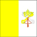
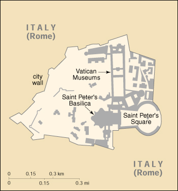

|
Holy See (Vatican City) |  |
| Introduction Geography People Government Economy Communications Transportation Military Transnational Issues | ||
|  | ||
| Holy See (Vatican City) | Introduction | Top of Page |
| Background: | Popes in their secular role ruled much of the Italian peninsula for more than a thousand years until the mid 19th century, when many of the Papal States were seized by the newly united Kingdom of Italy. In 1870, the pope's holdings were further circumscribed when Rome itself was annexed. Disputes between a series of "prisoner" popes and Italy were resolved in 1929 by three Lateran Treaties, which established the independent state of Vatican City and granted Roman Catholicism special status in Italy. In 1984, a concordat between the Vatican and Italy modified certain of the earlier treaty provisions, including the primacy of Roman Catholicism as the Italian state religion. Present concerns of the Holy See include the failing health of Pope John Paul II, interreligious dialogue and reconciliation, and the adjustment of church doctrine in an era of rapid change and globalization. About 1 billion people worldwide profess the Catholic faith. |
| Holy See (Vatican City) | Geography | Top of Page |
| Location: | Southern Europe, an enclave of Rome (Italy) |
| Geographic coordinates: | 41 54 N, 12 27 E |
| Map references: | Europe |
| Area: |
total:
0.44 sq km
land: 0.44 sq km water: 0 sq km |
| Area - comparative: | about 0.7 times the size of The Mall in Washington, DC |
| Land boundaries: |
total:
3.2 km
border countries: Italy 3.2 km |
| Coastline: | 0 km (landlocked) |
| Maritime claims: | none (landlocked) |
| Climate: | temperate; mild, rainy winters (September to mid-May) with hot, dry summers (May to September) |
| Terrain: | low hill |
| Elevation extremes: |
lowest point:
unnamed location 19 m
highest point: unnamed location 75 m |
| Natural resources: | none |
| Land use: |
arable land:
0%
permanent crops: 0% permanent pastures: 0% forests and woodland: 0% other: 100% (urban area) |
| Irrigated land: | 0 sq km (1993) |
| Natural hazards: | NA |
| Environment - current issues: | NA |
| Environment - international agreements: |
party to:
none of the selected agreements
signed, but not ratified: Air Pollution, Environmental Modification |
| Geography - note: | urban; landlocked; enclave of Rome, Italy; world's smallest state; outside the Vatican City, 13 buildings in Rome and Castel Gandolfo (the pope's summer residence) enjoy extraterritorial rights |
| Holy See (Vatican City) | People | Top of Page |
| Population: | 890 (July 2001 est.) |
| Population growth rate: | 1.15% (2001 est.) |
| HIV/AIDS - adult prevalence rate: | NA% |
| HIV/AIDS - people living with HIV/AIDS: | NA |
| HIV/AIDS - deaths: | NA |
| Nationality: |
noun:
none
adjective: none |
| Ethnic groups: | Italians, Swiss, other |
| Religions: | Roman Catholic |
| Languages: | Italian, Latin, French, various other languages |
| Literacy: |
definition:
NA
total population: 100% male: NA% female: NA% |
| Holy See (Vatican City) | Government | Top of Page |
| Country name: |
conventional long form:
The Holy See (State of the Vatican City)
conventional short form: Holy See (Vatican City) local long form: Santa Sede (Stato della Citta del Vaticano) local short form: Santa Sede (Citta del Vaticano) |
| Government type: | ecclesiastical |
| Capital: | Vatican City |
| Independence: | 11 February 1929 (from Italy) |
| National holiday: | Coronation Day of Pope JOHN PAUL II, 22 October (1978) |
| Constitution: | Apostolic Constitution of 1967 (effective 1 March 1968) |
| Legal system: | NA |
| Suffrage: | limited to cardinals less than 80 years old |
| Executive branch: |
chief of state:
Pope JOHN PAUL II (since 16 October 1978)
head of government: Secretary of State Cardinal Angelo SODANO (since 2 December 1990) cabinet: Pontifical Commission appointed by the pope elections: pope elected for life by the College of Cardinals; election last held 16 October 1978 (next to be held after the death of the current pope); secretary of state appointed by the pope election results: Karol WOJTYLA elected pope |
| Legislative branch: | unicameral Pontifical Commission |
| Judicial branch: | none; normally handled by Italy |
| Political parties and leaders: | none |
| Political pressure groups and leaders: | none (exclusive of influence exercised by church officers) |
| International organization participation: | CE (observer), IAEA, ICFTU, Intelsat, IOM (observer), ITU, NAM (guest), OAS (observer), OPCW, OSCE, UN (observer), UNCTAD, UNHCR, UPU, WHO (observer), WIPO, WToO (observer), WTrO (observer) |
| Diplomatic representation in the US: |
chief of mission:
Apostolic Nuncio Archbishop Gabriele MONTALVO
chancery: 3339 Massachusetts Avenue NW, Washington, DC 20008 telephone: [1] (202) 333-7121 |
| Diplomatic representation from the US: |
chief of mission:
Ambassador (vacant)
embassy: Villa Domiziana, Via delle Terme Deciane 26, 00162 Rome mailing address: PSC 59, Box F, APO AE 09624 telephone: [39] (06) 4674-3428 FAX: [39] (06) 5758346 |
| Flag description: | two vertical bands of yellow (hoist side) and white with the crossed keys of Saint Peter and the papal miter centered in the white band |
| Holy See (Vatican City) | Economy | Top of Page |
| Economy - overview: | This unique, noncommercial economy is supported financially by contributions (known as Peter's Pence) from Roman Catholics throughout the world, the sale of postage stamps and tourist mementos, fees for admission to museums, and the sale of publications. The incomes and living standards of lay workers are comparable to, or somewhat better than, those of counterparts who work in the city of Rome. |
| Population below poverty line: | NA% |
| Household income or consumption by percentage share: |
lowest 10%:
NA%
highest 10%: NA% |
| Labor force: | NA |
| Labor force - by occupation: | agriculture NA%, industry NA%, services NA%; note - dignitaries, priests, nuns, guards, and 3,000 lay workers live outside the Vatican |
| Budget: |
revenues:
$209.6 million
expenditures: $198.5 million, including capital expenditures of $NA (1997) |
| Industries: | printing and production of a small amount of mosaics and staff uniforms; worldwide banking and financial activities |
| Electricity - production by source: |
fossil fuel:
NA%
hydro: NA% nuclear: NA% other: NA% |
| Electricity - consumption: | NA kWh |
| Electricity - imports: | NA kWh; note - electricity supplied by Italy |
| Economic aid - recipient: | none |
| Currency: | Italian lira (ITL); euro (EUR) |
| Currency code: | ITL; EUR |
| Exchange rates: | euros per US dollar - 1.0659 (January 2001), 1.0854 (2000), 0.9386 (1999); Vatican lire per US dollar - 2,099 (2000), 1817.2 (1999), 1,736.2 (1998), 1,703.1 (1997), 1,542.9 (1996); note - the Vatican lira is at par with the Italian lira; the Vatican will start using euros in 2002 in conjunction with Italy at a fixed rate of 1,936.17 lire per euro |
| Fiscal year: | calendar year |
| Holy See (Vatican City) | Communications | Top of Page |
| Telephones - main lines in use: | NA |
| Telephones - mobile cellular: | NA |
| Telephone system: |
general assessment:
automatic exchange
domestic: tied into Italian system international: uses Italian system |
| Radio broadcast stations: | AM 3, FM 4, shortwave 2 (1998) |
| Radios: | NA |
| Television broadcast stations: | 1 (1996) |
| Televisions: | NA |
| Internet country code: | .va |
| Internet Service Providers (ISPs): | 93 (Holy See and Italy) (2000) |
| Internet users: | NA |
| Holy See (Vatican City) | Transportation | Top of Page |
| Railways: |
total:
862 m; note - a spur of the Italian Railways system, serving Rome's Saint Peter's station
standard gauge: 862 m 1.435-m gauge (1999) |
| Highways: | none; all city streets |
| Waterways: | none |
| Ports and harbors: | none |
| Airports: | none |
| Heliports: | 1 (2000 est.) |
| Holy See (Vatican City) | Military | Top of Page |
| Military - note: | defense is the responsibility of Italy; Swiss Papal Guards are posted at entrances to the Vatican City to provide security and protect the Pope |
| Holy See (Vatican City) | Transnational Issues | Top of Page |
| Disputes - international: | none |
{kind=link}
{kind=link}